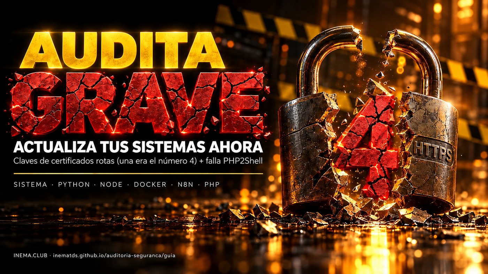

Guía v1.1.2 · actualizada el 23/10/2026
El navegador ya te protege. Tu servidor, tu Python, tu Node, tus contenedores y tu n8n quizás no. Aquí está cómo probarlo de verdad y cómo corregir cada capa.

Esta es una guía de seguridad para quien tiene un servidor, un sitio, una automatización o un agente de IA en funcionamiento. En octubre de 2026 llegaron juntas dos noticias graves: se filtraron las claves secretas de 8 certificados de la autoridad certificadora eMudhra (una de ellas era literalmente el número 4), y una falla en PHP, llamada PHP2Shell, permite invadir sitios sin contraseña. La guía muestra cómo probar si cada herramienta sigue expuesta, con un script que no instala ni modifica nada (solo ejecuta las pruebas), y cómo actualizar cada capa. Solo necesitas una terminal en la máquina que quieres revisar.
Una rompe la confianza del candado de HTTPS fuera del navegador. La otra abre los sitios PHP a una invasión sin inicio de sesión.
De la autoridad certificadora eMudhra, creados en una ceremonia el 30/04/2025: 6 para sitios (TLS) y 2 para firmar programas. Las cadenas pasan por la raíz emSign ECC Root CA – G3 y por la cruzada AAA Certificate Services (Sectigo).
Las claves P-384 deberían ser números gigantes. Salieron menores que 256: 4, 56, 66, 115, 155, 156, 230 y 237. Cualquiera las encuentra en menos de un segundo. Descubierto el 17/10/2026 por el investigador "Wayne".
Con la clave de una autoridad certificadora de confianza se puede emitir un HTTPS "válido" para cualquier sitio y colocarse en medio de la conexión. Hasta el 21/10 no había explotación confirmada, pero las claves son públicas.
Navegadores: Chrome y Firefox (17/10), Microsoft (20/10), Apple (22/10). Firefox corregido: 158.0.1 (NSS 3.131.1).
Todo lo que no es un navegador y tiene su propia lista de certificados: curl antiguo, Python (certifi), Node, Go, Docker, n8n, agentes de IA, apps Electron, programas en Rust, equipos sin actualizaciones.
Dos fallas críticas en PHP (CVE-2026-109618 y CVE-2026-109619) que permiten ejecutar comandos en el servidor sin iniciar sesión. Aviso del equipo de PHP del 21/10/2026.
Toda instalación de PHP que sirve páginas: PHP-FPM, Apache con mod_php, php-cgi, FrankenPHP y LiteSpeed. Mayor riesgo en mod_php. Incluye la mayoría de los sitios WordPress.
8.5.12 · 8.4.27 · 8.3.36 · 8.2.35. Detalles y qué hacer en PHP2Shell.
Los sitios de prueba de abajo usan certificados de las cadenas comprometidas. Si la herramienta conecta, todavía confía en las claves rotas. Si da error de certificado, está protegida.
curl https://dv-g3b-emudhra.we-have-a-problem.com/ curl https://dv-g3b-aaa-emudhra.we-have-a-problem.com/ # "SSL certificate problem" = protegido # mostró la página = EXPOSTO
node -e "require('https').get('https://dv-g3b-emudhra.we-have-a-problem.com/',r=>{console.log('EXPOSTO');process.exit()}).on('error',e=>{console.log(/CERT|ISSUER|UNABLE_TO|SELF_SIGNED|DEPTH_ZERO|ERR_TLS/.test(e.code)?'protegido':'SEM TESTE',e.code);process.exit()})" python3 -c "import ssl,urllib.request as u,urllib.error as E try: import certifi; ctx=ssl.create_default_context(cafile=certifi.where()) except ImportError: ctx=ssl.create_default_context() try: u.urlopen('https://dv-g3b-emudhra.we-have-a-problem.com/',context=ctx); print('EXPOSTO') except E.HTTPError: print('EXPOSTO') except Exception as e: print('protegido' if 'CERTIFICATE_VERIFY_FAILED' in str(e) else 'SEM TESTE', e)"
Un error de red (ENOTFOUND, timeout) no es "protegido". Si tienes dudas, usa el audita.sh.
El audita.sh es para Linux. En Windows (PowerShell) y en macOS (Terminal), la prueba rápida es el mismo curl: curl.exe https://dv-g3b-emudhra.we-have-a-problem.com/ (Windows) o curl https://dv-g3b-emudhra.we-have-a-problem.com/ (macOS), y lo mismo para la cadena dv-g3b-aaa-emudhra. Error de certificado = protegido. Si tienes Node o Python instalados, ejecuta también las pruebas de arriba.
AAA y aceptaban la G3 (o al revés). Una sola prueba puede darte una falsa sensación de seguridad. Y un error de red (DNS, timeout) no es "protegido": es "sin prueba".audita.sh: todo de una vez, sin alterar nadaPrueba la conexión real con curl, wget, cada Node, Deno y Bun que encuentre en el disco (incluso los embebidos en otras herramientas), el Python del sistema, cada entorno Python (venv o conda) con su propio certifi y, por dentro, cada contenedor Docker en ejecución. Revisa la lista de Java (el archivo cacerts), la versión de PHP en el servidor y en los contenedores (PHP2Shell), el certifi desactualizado y los procesos que necesitan reiniciarse. Al final, agrupa lo que encontró por tipo, con la corrección de cada uno. No instala, no altera y no corrige nada, pero ejecuta las herramientas que prueba (así es como comprueba la conexión). Es un relevamiento: señala problemas; no certifica que la máquina esté segura.
Regla de oro: nunca ejecutes un script de internet sin mirar qué hace. Este tiene alrededor de 650 líneas, comentadas.
curl -fsSLO https://raw.githubusercontent.com/inematds/auditoria-seguranca/main/audita.sh less audita.sh # lee chmod +x audita.sh
O clona el repositorio: git clone https://github.com/inematds/auditoria-seguranca.
Sin sudo audita tu usuario (y los contenedores, si estás en el grupo docker). Con sudo ve también las carpetas de otros usuarios. La búsqueda en el disco tarda hasta 3 minutos; --rapido se salta esa parte.
./audita.sh # completo sudo ./audita.sh # incluye contenedores Docker y otros usuarios ./audita.sh --rapido # sin buscar venvs, Node, Deno, Bun y JDKs en el disco ./audita.sh --sem-docker # no entra en los contenedores ./audita.sh --comandos # muestra los comandos de corrección (no ejecuta ninguno) ./audita.sh --go # también prueba Go de verdad (mira abajo) ./audita.sh --raiz /opt # busca en el disco solo en esa carpeta (repite --raiz para varias)
Dos pruebas no son de conexión, y el script lo avisa en la línea. Java: revisa si el archivo de confianza de Java (cacerts) todavía tiene las dos raíces, porque probar la conexión exigiría compilar código Java. Go: la prueba real compila un programa pequeño en una carpeta temporal (unos 100 MB, borrada al final). Como eso escribe en el disco, solo se ejecuta con --go.
Con sudo, el Node instalado por el nvm de tu usuario no está en la ruta estándar; la búsqueda en el disco todavía lo encuentra (no uses --rapido en ese caso).
sudo, el script no ejecuta como root lo que otra persona pueda cambiar. Un programa encontrado en el disco (Node, Deno, Bun, el Python de un venv, el keytool de un JDK) solo se ejecuta si el archivo, cada enlace y cada carpeta del camino hasta la raíz son del root o del dueño y nadie más puede escribir en ellos. El programa de un usuario se ejecuta como ese usuario (runuser), nunca como root. Lo que no pasa queda como SEM TESTE (SIN PRUEBA), con el motivo. Aun así, ejecútalo como root solo en una máquina que administras tú.== meuservidor · Ubuntu 24.04.3 LTS · 23/10/2026 02:36 · audita.sh 1.1.2 -- versões ca-certificates 20260816ubuntu0.24.04.1 -- conexão real (G3 = cadeia emSign ECC Root CA - G3 · AAA = cadeia cruzada AAA Certificate Services) protegido curl G3 protegido curl AAA EXPOSTO node v24.13.0 /usr/bin/node G3 protegido node v24.13.0 /usr/bin/node AAA versão: ATUALIZE para 24.22.1+ EXPOSTO deno 2.7.14 ~/.deno/bin/deno G3 EXPOSTO venv ~/projetos/app/.venv G3 protegido venv ~/projetos/app/.venv AAA -- Java: lista de confiança (cacerts) — conferida pelo keytool, sem conexão EXPOSTO java /etc/ssl/certs/java/cacerts G3 (lista do keystore, não conexão) -- containers Docker em execução (teste de dentro de cada um) [n8n] n8nio/n8n:2.4.8 EXPOSTO node v20.19.0 G3 [painel-db] adminer:latest EXPOSTO php 8.4.21 PHP PHP2Shell: atualize para 8.4.27+ -- processos a reiniciar (não reinicie no meio de job, upload ou live; escolha a hora) REINICIE pid 3361 meubot.service (sistema) /usr/bin/node dist/index.js o binário foi atualizado depois que o processo começou -- resumo meuservidor: 7 EXPOSTO · 0 SEM TESTE · 0 VERIFIQUE · 1 REINICIE -- o que corrigir, por tipo (conta itens; o resumo acima conta linhas, 2 por item: G3 e AAA) 1 Node ex.: /usr/bin/node (v24.13.0) → sudo apt update && sudo apt install --only-upgrade nodejs 1 Deno ex.: ~/.deno/bin/deno (2.7.14) → ~/.deno/bin/deno upgrade 1 containers de versão fixada (grupo C: subir a versão) ex.: n8n (n8nio/n8n:2.4.8) → versão fixada: a tag pode ter sido republicada com a base corrigida — salve o digest atual, puxe a mesma tag e recrie; se o digest não mudou ou seguir EXPOSTO, suba a versão 1 processos a reiniciar (fora de job, upload ou live) ex.: meubot.service (sistema) → sudo systemctl restart meubot.service
Fragmento de ejemplo (la salida real tiene más líneas; el script escribe en portugués). G3 y AAA son los dos "caminos de confianza" probados: cada certificado de sitio está firmado por un intermediario, que está firmado por una raíz en la que confía tu programa.
apt changelog <paquete> | grep CVE-2026-109618. ¿Verificado y corregido? Ejecuta con --php-ok y el VERIFIQUE deja de retener la salida.Al final viene el bloque o que corrigir, por tipo: cuántos elementos de cada tipo, un ejemplo y el comando sugerido. El resumen cuenta líneas (cada herramienta aparece dos veces, G3 y AAA); el bloque cuenta elementos. Con --comandos sale la lista completa, un comando por elemento, para que la revises y ejecutes uno por uno. El script nunca ejecuta la corrección.
Al final viene también el bloque escopo desta rodada: lo que quedó fuera (--rapido, --sem-docker, --raiz, --php-ok, Go sin --go, y con qué usuario se ejecutó).
Código de salida: 0 las verificaciones hechas pasaron, dentro del alcance impreso; 1 hay EXPOSTO; 2 hay SEM TESTE; 3 nada conecta, pero falta reiniciar procesos o revisar PHP. La salida 0 no quiere decir que toda la máquina esté segura. En monitoreo, trata cualquier salida distinta de 0 como alerta y no liberes un deploy automático solo por la salida 0.
El script va por el propio SSH y se ejecuta allá, sin copiar nada al servidor. Usa acceso por llave.
./audita.sh --ssh root@servidor1 --ssh deploy@servidor2 # o una lista (un destino por línea; no versiones este archivo) ./audita.sh --hosts servidores.txt # llave SSH específica (vale para todos los destinos) ./audita.sh --chave ~/.ssh/minha_chave --ssh root@servidor1
Si el SSH no conecta o se cae a la mitad (tiempo agotado, bash ausente allá), la línea dice SEM TESTE con el código y la salida no es 0: un servidor que no respondió nunca pasa como limpio. Ejemplo de servidores.txt: una línea root@203.0.113.10, otra deploy@vps2 # loja. Allí, el script se ejecuta con el usuario del SSH: para ver los contenedores y las carpetas de otros usuarios, entra como root (o con un usuario del grupo docker).
La auditoría solo termina cuando el resumen muestra 0 EXPOSTO · 0 SEM TESTE · 0 VERIFIQUE · 0 REINICIE (salida 0) en todas las máquinas, en una pasada completa (sin --rapido, y con el bloque de alcance sin nada importante afuera). Un proceso que ya estaba corriendo guarda la lista antigua en la memoria: actualizar sin reiniciar no resuelve.
Cada herramienta puede tener su propia lista de certificados de confianza. El ca-certificates del sistema protege a curl y a quien usa la lista del sistema. Node, Python con certifi, Go, Electron, Rust y cada contenedor tienen la suya.
Antes. Haz un respaldo de lo que no vuelve: base de datos, volúmenes, la imagen antigua con una etiqueta de reserva y la configuración. Y comprueba que el sistema está sano ahora, para saber comparar después.
docker exec meu-postgres pg_dumpall -U postgres > backup-$(date +%F).sql # base de datos docker tag meuapp:latest meuapp:pre-update # imagen antigua de reserva docker inspect meuapp > meuapp.inspect.json # puertos, env, volúmenes sudo tar czf config-$(date +%F).tgz /etc/nginx /caminho/do/app/.env # configuración curl -fsS https://meusite/health && echo OK # salud antes docker exec meu-postgres psql -U postgres -d app -c "select count(*) from clientes" # anota los números
Después. Muchas cosas que funcionaban pueden quedar incompatibles con la versión nueva. Vimos una dependencia sin versión fija romper una app, un venv resincronizarse y deshacer la corrección, y un proxy guardar la dirección antigua y responder 502. Por eso prueba y valida: el servicio arrancó, responde, hace lo que hacía y los datos están ahí (mismos conteos). Solo da por terminado cuando esté ok y en el aire.
| Capa | Versión corregida | Dónde vive la lista |
|---|---|---|
| Ubuntu | 20260816ubuntu0.<versión de Ubuntu> (ej.: 20260816ubuntu0.24.04.1) | sistema |
| Debian | 20250419~deb12u2 (Debian 12) · 20250419+deb13u1 (Debian 13) | sistema |
| Alpine | ca-certificates 20261020-r0 | sistema / contenedores |
| Python | certifi 2026.10.19 · pip 26.2.2 · uv 0.13.5 · el propio Python: 3.15.1 · 3.14.9 · 3.13.17 | en cada venv |
| Node | 22.23.4 · 24.22.1 · 26.12.1 (Node 20: sin corrección) | dentro del binario |
| Go | 1.27.3 · 1.26.10 + recompilar | en Linux, la del sistema (ver paso 4) |
| Java (OpenJDK) | las dos raíces quitadas del cacerts (keytool -delete) o JDK actualizado | archivo cacerts de cada JDK |
| Deno · Bun | rechazaron las dos cadenas en nuestra prueba: Deno 2.9.8 · Bun 1.4.4 | dentro del binario |
| Firefox / NSS | 158.0.1 · NSS 3.131.1 | navegador |
| Electron | 44.9.1 · 43.8.1 · 42.11.16 | dentro de cada app |
| Rust | rustls-webpki 0.103.16 · webpki-roots 1.0.10 | dentro de cada programa |
| FreeBSD | ca_root_nss 1.131.1 (ports) · base: 15.1-RELEASE-p6 · 14.5-RELEASE-p3 · 14.4-RELEASE-p12 (FreeBSD-SA-26:73) | sistema |
# Ubuntu / Debian sudo apt update && sudo apt install --only-upgrade ca-certificates dpkg-query -W ca-certificates # comprueba la versión # Alpine apk upgrade --no-cache ca-certificates # Fedora / RHEL sudo dnf upgrade ca-certificates
Deja activada la actualización automática (unattended-upgrades en Ubuntu/Debian). En nuestro caso fue ella la que corrigió el sistema sola.
requests y muchos paquetes usan certifi, no la lista del sistema. Cada venv tiene el suyo. audita.sh lista los desactualizados.
/caminho/do/venv/bin/python -m pip install -U certifi pip python3 -c "import certifi; print(certifi.__version__, certifi.where())" # 2026.10.19 o más # herramientas instaladas con pipx / uv tool pipx upgrade-all # o: pipx runpip <app> install -U certifi uv self update # uv 0.13.5 o más uv tool upgrade --all # entornos conda (miniconda/anaconda) conda update -n <entorno> certifi
Atención al Python "del sistema": si aparece EXPOSTO (EXPUESTO) en el modo certifi, hay un certifi instalado con pip --user en tu carpeta (~/.local/lib/python3.X/). La ruta que muestra el comando de arriba dice cuál es. En Ubuntu 24.04 y en Debian 12+ pip se niega a tocar ahí ("externally-managed-environment"); como el cambio queda solo en tu carpeta de usuario, usa:
python3 -m pip install --user --break-system-packages -U certifi
El certifi del paquete del sistema (/usr/lib/python3/dist-packages) no necesita esto: en Debian/Ubuntu apunta a la lista de ca-certificates.
Venv sin pip (creado por uv): el comando -m pip falla. Usa uv apuntando al Python del venv:
uv pip install --python /caminho/do/venv/bin/python -U certifi
uv run: un proyecto que arranca con uv run resincroniza el venv con uv.lock en cada inicio y deshace el certifi nuevo. Sube el certifi en el propio lock: uv lock --upgrade-package certifi && uv sync. audita.sh avisa cuando el venv tiene un uv.lock al lado.Node trae la lista de certificados dentro del propio programa. Actualizar el sistema no cambia nada para él.
# con nvm nvm install 22 && nvm alias default 22 # 22.23.4 o más # con el repositorio NodeSource (apt): está separado por versión. # Si estás en el 20, cambia el repositorio al 22 antes de instalar: curl -fsSLo nodesource_setup.sh https://deb.nodesource.com/setup_22.x less nodesource_setup.sh # léelo sudo bash nodesource_setup.sh && sudo apt install -y nodejs # ¿ya estás en el 22 o 24? basta con actualizar sudo apt update && sudo apt install --only-upgrade nodejs node -v
Paliativo para quien no puede cambiar hoy (probado por nosotros): hacer que Node use la lista del sistema ya actualizada. Solo funciona si el ca-certificates está corregido. --use-system-ca no sirve: suma las dos listas y siguió EXPOSTO (EXPUESTO) en nuestra prueba.
export NODE_OPTIONS=--use-openssl-ca # en el servicio/entorno de la app; luego reinicia
Un Node descargado de nvm o de nodejs.org puede no encontrar solo la lista del sistema: si la prueba da error en todo, agrega SSL_CERT_FILE=/etc/ssl/certs/ca-certificates.crt y confirma con audita.sh. NODE_OPTIONS es la variable de entorno que pasa opciones a todo Node iniciado ahí (en systemd: Environment=NODE_OPTIONS=--use-openssl-ca; en Docker: environment: del compose).
Busca también Node embebido: Playwright, agentes de IA y apps traen un Node propio. audita.sh encuentra esos binarios en el disco; actualiza la herramienta que los trajo. En el caso de Playwright dentro de un venv de Python, el Node queda en …/site-packages/playwright/driver/node: actualiza el paquete (pip install -U playwright; en npm, npm i playwright@latest) o usa el paliativo NODE_OPTIONS=--use-openssl-ca en el servicio que lo usa.
Instala Go 1.27.3 o 1.26.10 y genera el binario de nuevo (go build). Programas Go de terceros: actualiza a la versión que lancen después del 21/10.
Lo que vimos en nuestra prueba, en Linux: un programa hecho con Go 1.26.3 rechazó las dos cadenas con la lista del sistema corregida y conectó cuando apuntamos a una lista antigua (SSL_CERT_FILE). O sea, en Linux Go sigue la lista del sistema, o la del contenedor donde corre. Corregir el ca-certificates ya protege a buena parte de los programas Go; quien embebe su propia lista (paquete x509roots/fallback) o corre en un contenedor con imagen antigua sigue expuesto. Por eso recompila de todos modos. Para la prueba real: ./audita.sh --go.
Java no lee la lista del sistema directamente: usa un archivo propio, el cacerts. En Debian/Ubuntu ese archivo se genera a partir de ca-certificates, pero puede no rehacerse en la actualización. En nuestro caso, el sistema ya estaba corregido y el cacerts de OpenJDK 8 seguía siendo de 2025, con las dos raíces dentro.
# dónde está el cacerts del Java que usas readlink -f $(dirname $(readlink -f $(which java)))/../lib/security/cacerts ls /usr/lib/jvm/ # otros JDK instalados # ¿todavía tiene las raíces? keytool -list -keystore /etc/ssl/certs/java/cacerts -storepass changeit | grep -qiE "emsign_ecc_root_ca_-_g3|comodo_aaa" && echo EXPOSTO || echo limpo # Debian/Ubuntu: guarda una copia y quita las dos raíces del cacerts sudo cp -a /etc/ssl/certs/java/cacerts /etc/ssl/certs/java/cacerts.bak sudo keytool -delete -alias debian:emsign_ecc_root_ca_-_g3.pem -keystore /etc/ssl/certs/java/cacerts -storepass changeit sudo keytool -delete -alias debian:comodo_aaa_services_root.pem -keystore /etc/ssl/certs/java/cacerts -storepass changeit
update-ca-certificates -f no basta. En nuestra prueba regrabó el archivo, pero las dos raíces siguieron ahí, incluso con el sistema ya corregido. Por eso la eliminación se hace a mano, con el keytool -delete de arriba. Los nombres (debian:…) son los de Debian/Ubuntu; en otro JDK, usa el nombre que muestre keytool -list. Después vuelve a correr la prueba: tiene que dar limpo. El sistema corregido ya sacó esas dos raíces de su lista (compruébalo: grep -iE "emSign_ECC_Root_CA_-_G3|Comodo_AAA" /etc/ca-certificates.conf muestra las dos con ! delante, que quiere decir "desconfiar"); el cacerts solo se quedó atrás. Quita las raíces de Java solo después de ver eso. Si algún sitio deja de abrir en un programa Java después de esto, actualiza el JDK y ca-certificates-java en lugar de devolver la raíz. Recuerda: en Java, audita.sh revisa la lista, no hace conexión.JDK con cacerts propio (descargado aparte, dentro de un IDE, en un /opt): actualiza el JDK. changeit es la contraseña predeterminada del archivo, pública; solo protege contra escritura accidental. Después, reinicia los programas Java.
Como Node, los dos traen la lista embebida. En nuestra prueba, Deno 2.7.12 y Bun 1.3.13 conectaron; después de actualizar, Deno 2.9.8 y Bun 1.4.4 rechazaron las dos cadenas.
deno upgrade bun upgrade # prueba de una línea (error de certificado = protegido) deno eval "await fetch('https://dv-g3b-emudhra.we-have-a-problem.com/')" bun -e "await fetch('https://dv-g3b-emudhra.we-have-a-problem.com/')"
Los dos quedan en la carpeta del usuario (~/.deno, ~/.bun): corre la actualización con el usuario dueño, no con sudo.
El contenedor no usa el ca-certificates del servidor. Imagen antigua = lista antigua. La corrección depende de cómo llegó la imagen ahí, y audita.sh ya separa los contenedores expuestos en estos grupos (con docker inspect, sin tocar nada).
redis:alpine, nginx:alpine, postgres:16-alpine, …:latest, …:main. El proveedor cambia la imagen detrás de la misma etiqueta: basta con hacer pull y recrear.
Imagen hecha con docker build a partir de un Dockerfile tuyo. Reconstruir desde cero puede romper la app; el camino seguro es la capa por encima.
kong:2.8.1, gotrue:v2.197.0. La etiqueta cambia poco, pero no es inmutable: el proveedor puede republicar la misma etiqueta con la base corregida (lo que nunca cambia es el digest, sha256:…). Haz pull otra vez y compara el digest; si no cambió o sigue EXPOSTO, sube la versión, y a veces espera al proveedor.
Un contenedor sin curl, wget, Node ni Python (ej.: postgres:16 Debian) aparece como SEM TESTE "nenhuma ferramenta de teste" (ninguna herramienta de prueba) (cuenta como prueba que no se ejecutó, y la salida no es 0): el script no tiene cómo probar la conexión. Comprueba la lista por el paquete (docker exec <c> dpkg-query -W ca-certificates o apk list -I ca-certificates-bundle) y compárala con la tabla de versiones.
docker compose up -d --pull always redis # un servicio; repite para los demás docker compose pull && docker compose up -d # todos de una vez (mira el aviso sobre bases de datos abajo) # prueba: el paquete de la lista dentro del contenedor (Alpine) docker compose exec redis apk list -I ca-certificates-bundle # 20261020-r0 o más
Si pruebas a mano con el wget de busybox (Alpine), el rechazo aparece como ssl_client: SSL_connect o Connection reset by peer, que parece un error de red. Para estar seguro, prueba un sitio bueno con el mismo wget (wget -O /dev/null https://www.google.com/): si ese abre, la falla del sitio de prueba fue de certificado. audita.sh ya hace esa comprobación.
latest o sin versión principal (postgres:latest, mysql:latest, mongo): el pull puede traer una versión principal nueva (ej.: Postgres 16 → 18), que no abre el directorio de datos antiguo. Antes del pull, fija la versión principal que usas hoy (postgres:16-alpine) y haz el pg_dumpall.docker run): guarda la receta antes, docker inspect redis > redis.inspect.json, y mira .Mounts. Sin volumen, los datos mueren con el contenedor: en Redis, redis-cli save y docker cp redis:/data/dump.rdb . antes; después levanta el nuevo con los mismos puertos y variables y devuelve el archivo.docker compose up -d <servicio>). audita.sh muestra esos como "solo recrear".:main del 16/10 siguió EXPOSTA (EXPUESTA) después del pull. Ahí usa la capa por encima (abajo) hasta que salga la oficial.Reconstruir con docker compose build --pull baja la base nueva y todas las dependencias sin versión fija. En nuestro caso, una app en Node subió plugins nuevos y dejó de funcionar. La técnica que funcionó: mantener la imagen que ya corre y cambiar solo la lista y Node por encima.
# 1) guarda la imagen actual con otro nombre (es tu camino de vuelta) docker tag meuapp:latest meuapp:pre-emudhra # 2) Dockerfile.emudhra FROM meuapp:pre-emudhra USER root # instalar exige root COPY --from=node:22-bookworm-slim /usr/local/bin/node /usr/local/bin/node # solo si la imagen tiene Node 22; misma versión principal y misma distro de la base RUN apt-get update && apt-get install -y --only-upgrade ca-certificates && rm -rf /var/lib/apt/lists/* # Alpine: RUN apk add -u ca-certificates ca-certificates-bundle RUN python3 -m pip install -U certifi # si la app tiene Python con pip propio USER app # vuelve al usuario original (mira: docker inspect -f '{{.Config.User}}' meuapp:pre-emudhra) # 3) construye por encima y recrea docker build -f Dockerfile.emudhra -t meuapp:latest . docker compose up -d meuapp # ¿salió mal? vuelve: docker tag meuapp:pre-emudhra meuapp:latest && docker compose up -d meuapp
.node) hechos para Node 20 no cargan en el 22. Una imagen con Node 20 no se puede corregir así; hay que reconstruirla con base 22.pip se niega con externally-managed-environment, el Python es el del sistema de la imagen (apt): el ca-certificates actualizado ya cubre ese Python. Quita la línea de pip; no uses || true, que esconde el error.node:22-… del COPY tiene que ser de la misma familia que la base (bookworm con Debian 12, alpine con Alpine), si no el binario no corre.uv run: uv resincroniza el venv con uv.lock y deshace el certifi nuevo. Sube el certifi en el lock, o cambia solo el archivo cacert.pem del certifi fijado por el de la lista nueva.KeyError: 'ContainerConfig': docker-compose rm -f -s <servicio> antes del up.node:20 por node:22 (o 24) en el Dockerfile, fija las versiones de las dependencias y reconstruye de verdad (docker compose build --pull).Sube la versión en el compose o en la configuración a una lanzada después del 21/10/2026 y prueba de nuevo. Si el proveedor todavía no reconstruyó la imagen, no hay nada que bajar: la espera es por él.
Supabase local (el de la CLI supabase start) es el caso típico: la CLI fija cada imagen. El camino es este, en este orden:
# 1) respaldo de la base de datos (con todo corriendo) docker exec supabase_db_<proyecto> pg_dumpall -U postgres > supabase-backup.sql # 2) CLI nueva + parar y levantar (en la carpeta del proyecto; sin --no-backup, que borraría los datos) npx -y supabase@latest stop && npx -y supabase@latest start # 3) prueba de nuevo ./audita.sh # completo: el --rapido no encuentra venvs ni a quién reiniciar
docker rm): usa la CLI.supabase start descarta la tuya.start puede levantar más servicios que antes (en nuestro caso, de 4 a 12 contenedores). Revisa la memoria de la máquina.localhost, la exposición es baja. Los que hacen conexión HTTPS de salida son pocos servicios (autenticación, panel, logs).n8n corre en Node. Versión antigua = Node antiguo dentro del contenedor.
# 1) encuentra el nombre del volumen (el compose suele poner el nombre de la carpeta delante) docker volume ls | grep n8n # ej.: meuprojeto_n8n_data # 2) para n8n y haz el respaldo (con él parado la base no sale a medias) docker compose stop n8n docker run --rm -v meuprojeto_n8n_data:/data -v "$PWD":/bk alpine tar czf /bk/n8n-backup.tgz -C /data . # 3) si el compose fija la versión (image: n8nio/n8n:2.4.8), cámbiala por la actual antes: # image: n8nio/n8n:2.44.6 (o más nueva; revisa las notas de versión) # 4) actualiza docker compose pull n8n && docker compose up -d n8n docker compose exec n8n node -v # confirma el Node nuevo
Hacer pull de la misma etiqueta puede traer una imagen republicada. Revisa si el digest cambió (docker image inspect -f '{{.RepoDigests}}' n8nio/n8n:2.4.8, antes y después): si no cambió, subir la versión es el camino.
KeyError: 'ContainerConfig' y dejar n8n parado. Quita el contenedor antiguo antes (los datos quedan en el volumen): docker-compose rm -f -s n8n && docker-compose up -d n8n. Mejor aún: migra a docker compose v2.Otras formas de guardar los datos: si n8n usa una carpeta montada (ej.: ./n8n_data o ~/.n8n), copia la carpeta con él parado; si usa Postgres, haz el pg_dump de la base. En todos los casos guarda junto la clave de cifrado (N8N_ENCRYPTION_KEY o el archivo config de la carpeta de n8n): sin ella las credenciales guardadas no vuelven.
Después de actualizar, mira el log (docker compose logs n8n). Los saltos grandes de versión pueden traer avisos nuevos, como el del ejecutor de Python del nodo Code.
cargo update -p rustls-webpki -p webpki-roots y recompila.El programa que ya está corriendo guardó la lista antigua en la memoria: actualizar sin reiniciar no resuelve. Bots, APIs, workers, agentes, n8n y cualquier servidor Python con venv (uvicorn, gunicorn) necesitan reiniciar después de la corrección. audita.sh lista en la sección processos a reiniciar a quien todavía corre con el programa antiguo (Node se cambió después de que el proceso empezó) o empezó antes del certifi nuevo de su venv.
# a mano: procesos Python de venv y Node, con el tiempo de ejecución en segundos ps -eo pid,etimes,args | grep -E "venv/bin/python|/node " | grep -v grep # servicios que están corriendo systemctl list-units --type=service --state=running systemctl --user list-units --type=service --state=running pm2 list # reinicia sudo systemctl restart <servicio> # servicios del sistema systemctl --user restart <servicio> # servicios de tu usuario pm2 restart all # apps Node gestionadas por pm2 (pm2 update reinicia el propio pm2) docker compose up -d # contenedores: recrea con la imagen nueva
En la lista del script, cada proceso viene con lo que hay que reiniciar: (sistema) es sudo systemctl restart, (--user) es systemctl --user restart, y processo avulso es algo que abriste en la terminal, en tmux o en pm2: reinicia solo ese programa.
user@1000.service (u otro número): es la sesión completa del usuario. Derriba terminales, tmux, jobs y subidas de una vez.Atención: docker compose restart solo reinicia el mismo contenedor, con la imagen vieja. Después de pull o build, lo correcto es docker compose up -d.
Y corre audita.sh de nuevo.
¿Actualizaste? Comprueba, servicio por servicio: arrancó (docker compose ps, systemctl status), responde (curl -fsS https://meusite/health), hace lo que hacía (ábrelo, inicia sesión, corre un flujo) y los datos están ahí (los mismos conteos de antes). ¿Salió mal? Vuelve con la imagen de reserva (docker tag meuapp:pre-update meuapp:latest && docker compose up -d meuapp). Atención: si la versión nueva ya migró la base de datos (n8n, Postgres, apps con migración), la imagen antigua no abre la base migrada: ahí la vuelta es restaurar el respaldo del volumen o el dump junto con la imagen antigua. En un salto grande de versión, prueba antes en una copia del volumen. Y corre audita.sh de nuevo. Solo termina cuando esté ok y en el aire.
En la madrugada del 23/10/2026 auditamos 6 servidores con este método. Sin nombres ni direcciones: lo que importa es el patrón.
El ca-certificates de los 6 servidores ya estaba corregido por la actualización automática. curl rechazaba las cadenas malas.
Node, entornos Python (certifi) y contenedores, incluido n8n, seguían confiando en las claves rotas.
n8n no arrancó después del pull: docker-compose 1.29 dio KeyError 'ContainerConfig' con la imagen nueva y el servicio quedó caído unos minutos. Se resolvió quitando el contenedor antiguo antes del up.
Un nginx en contenedor montaba la configuración desde un archivo en /tmp. La limpieza de /tmp convirtió la ruta en una carpeta vacía, y al recrear el contenedor nginx no arrancó. La configuración montada tiene que vivir en una carpeta permanente.
Ese mismo día corrimos audita.sh en la máquina de trabajo, la que tiene decenas de proyectos, entornos Python y contenedores locales. El sistema y curl estaban protegidos. Lo demás no: 134 líneas EXPOSTO (EXPUESTO). Corrigiendo capa por capa, bajó a 70 y después quedó solo lo que dependía del proveedor. Lo que aprendimos, en el orden en que apareció:
cacerts de OpenJDK 8 era de 2025 y aún tenía las dos raíces, con el sistema ya corregido. update-ca-certificates -f regrabó el archivo, pero las raíces se quedaron: hubo que quitar las dos con keytool -delete.deno upgrade y bun upgrade lo resolvieron.pip --user en la carpeta del usuario pasaba por delante del certifi del sistema y dejaba el "python3 del sistema" EXPOSTO (EXPUESTO).uv pip install --python ….uv run deshacían la corrección en cada inicio, por el uv.lock.:pre-emudhra..bak) olvidada después del cambio de versión: no se ejecutaba, pero es el tipo de resto que alguien ejecuta por error. Borra las copias antiguas que no uses. El patrón de todo esto es uno solo: lo que no es el sistema se queda atrás.Aviso del equipo de PHP del 21/10/2026: dos fallas críticas permiten ejecutar código en el servidor sin iniciar sesión. La falla está en PHP, antes de que WordPress o cualquier aplicación abra la página. Un plugin de seguridad no la detiene.
CVE-2026-109618: el manejo de falta de memoria interrumpe PHP con datos de la solicitud a medias, y la limpieza trata esos datos como válidos.CVE-2026-109619: un estado interno de la solicitud sobrevive después de que se libera la memoria, y la siguiente solicitud del mismo proceso usa ese estado viejo.Shopify, Wix, Squarespace: el PHP es responsabilidad de la empresa. Revisa el aviso de seguridad de la plataforma; si no lo encuentras, pregunta al soporte.
Prueba el sitio (paso de abajo) y mira la versión de PHP en el panel del hosting. Por debajo de la versión corregida: pide al proveedor que actualice hoy.
Depende de ti y es urgente: los ataques empezaron incluso antes de que saliera la corrección. Actualiza, reinicia y busca señales de intrusión.
OpenAI publicó el php2shell-checker (licencia Apache 2.0). Lee la versión que el sitio anuncia en los encabezados; no envía ningún ataque. Necesita git y Node instalados en tu computadora (no en el servidor).
git clone https://github.com/openai/php2shell-checker && cd php2shell-checker node phpcheck.js "https://seusite.com.br" # OK (0) · POTENTIALLY VULNERABLE (1) · UNKNOWN (3)
O pídele a tu agente (Claude Code, Codex): "ejecuta el php2shell-checker solo contra mi sitio y explícame el resultado". UNKNOWN no es luz verde: el sitio oculta la versión; confírmala en el panel o en el servidor.
php -v php-fpm8.3 -v # ajusta el número de la versión apt changelog php8.3-fpm | head -30 # Debian/Ubuntu: busca CVE-2026-109618 # PHP dentro de contenedores (paneles, WordPress, adminer, phpMyAdmin) for c in $(docker ps --format '{{.Names}}'); do echo "$c: $(docker exec $c php -v 2>/dev/null | head -1)"; done
No olvides los contenedores: una imagen con PHP antiguo es tan vulnerable como el servidor, y los paneles de base de datos suelen quedar expuestos en un puerto. El audita.sh ya muestra la versión de PHP de cada contenedor y del servidor y la compara con las corregidas (EXPOSTO (EXPUESTO) por debajo de ellas; VERIFIQUE (VERIFICA) cuando el número es de un paquete de la distribución). Para corregir: descarga la imagen nueva y recrea el contenedor (grupo A de la sección Docker).
Antes: haz un respaldo del sitio (sudo tar czf site-$(date +%F).tgz /var/www) y de la base de datos (mysqldump --all-databases > wp-$(date +%F).sql), y anota si la home y /wp-admin abren. Después: revisa los dos de nuevo y el php -v. Mira la sección antes y después de actualizar.
sudo apt update apt list --upgradable 2>/dev/null | grep -i php # mira qué va a cambiar sudo apt install --only-upgrade $(dpkg -l 'php*' | awk '/^ii/{print $2}') # solo los paquetes PHP instalados sudo systemctl restart php8.3-fpm # o apache2, si usas mod_php
¿Usas el repositorio PPA ondrej/php (común para tener varias versiones)? También debe tener la versión corregida; confírmalo con php -v después. mod_php es PHP ejecutándose dentro de Apache; PHP-FPM es PHP como servicio separado, usado con nginx o Apache.
El propio equipo de PHP avisa: estas medidas reducen caminos de ataque conocidos, no hacen segura la instalación. Solo la actualización lo resuelve. Aplícalas en el php.ini, en el pool de FPM o en la configuración del servidor (no con ini_set() ni en .user.ini) y reinicia todos los workers.
# en el pool de FPM (ej.: /etc/php/8.3/fpm/pool.d/www.conf), que la aplicación no puede cambiar: php_admin_value[memory_limit] = -1 php_admin_value[post_max_size] = 8M # 32M si el sitio necesita subir archivos php_admin_value[upload_max_filesize] = 6M # siempre por debajo de post_max_size php_admin_flag[session.upload_progress.enabled] = off # solo en PHP 8.5: php_admin_flag[fatal_error_backtraces] = off
memory_limit = -1 (contra la CVE-2026-109618) quita el límite de memoria de PHP. Esto elimina la falla de memoria que controla el atacante, pero no cierra el camino por completo: una falla real de asignación (la memoria del servidor agotándose) aún puede llegar al punto vulnerable. Y un script con errores puede consumir toda la RAM del servidor. Por eso el equipo de PHP recomienda poner un límite fuera de PHP: el límite de memoria del contenedor (Docker) o del servicio (cgroup, en systemd MemoryMax=), de preferencia terminando solo el proceso afectado.RLIMIT_AS/RLIMIT_DATA (límites de memoria de ulimit) en su lugar: pueden provocar justamente la falla de memoria vulnerable.session.upload_progress.enabled y fatal_error_backtraces desactivados (contra la CVE-2026-109619) bloquean solo los caminos confirmados, no otras variantes.session.upload_progress.enabled = 0 incluso después de actualizar, hasta la próxima versión regular de PHP. El riesgo solo existe en una combinación rara: la app define session.serialize_handler como php_binary o php_serialize en la configuración y cambia a php con ini_set() antes de session_start(), con el upload progress activado (el valor por defecto). Una app que nunca cambia el serialize_handler en ejecución no se ve afectada por ese camino y puede dejar la función activada. Quien ya la desactivó el 21/10 no necesita hacer nada más. El audita.sh avisa (línea info) cuando la función está activada en el PHP de línea de comandos; lo que vale es la configuración de FPM o de Apache.# archivos .php creados o modificados en los últimos 7 días dentro del sitio find /var/www -name '*.php' -mtime -7 -ls # .php dentro de la carpeta de uploads de WordPress (ahí no debería haber ninguno) find /var/www -path '*wp-content/uploads*' -name '*.php' -ls # tareas programadas que tú no creaste crontab -l; sudo crontab -l -u www-data; ls -la /etc/cron.* # accesos recientes y usuarios nuevos last -20; tail -5 /etc/passwd wp user list --role=administrator --path=/var/www/seusite # WP-CLI; como root, agrega --allow-root
¿Encontraste algo que tú no creaste? Saca el sitio del aire, cambia contraseñas y claves, y restaura desde un respaldo anterior a la intrusión.
La inteligencia artificial encuentra fallas antiguas cada vez más rápido. La defensa es rutina, no susto.
curl | bashcurl ... | bash ejecuta código de internet con tu usuario. Descárgalo primero, léelo y solo entonces ejecútalo.sha256sum arquivo) o la firma publicada por el proyecto.package-lock.json, requirements.txt con versión, imagen Docker con tag) y actualiza a propósito, no por casualidad../audita.sh en todas las máquinas: resumen en cero.Todo certificado emitido queda en un registro público (Certificate Transparency). Busca tu dominio en crt.sh y revisa si apareció algún certificado que tú no pediste. Un registro CAA en el DNS indica qué certificadoras pueden emitir para tu dominio.
dig CAA seudominio.com.br +short--pull: una imagen vieja en caché trae una lista vieja.audita.sh en el pipeline como alarma: cualquier salida distinta de 0 bloquea el deploy (1 EXPOSTO, 2 SEM TESTE, 3 pide reinicio). La salida 0 por sí sola no libera nada: vale solo dentro del alcance impreso al final, y el script es un relevamiento, no un certificado..env fuera del repositorio); si una clave se filtró, cámbiala, no solo la borres.Empresa que firma los certificados HTTPS. Es la "notaría" que dice: este sitio es realmente quien dice ser.
La raíz es la firma madre en la que confía tu programa. Ella firma intermedios, que firman los sitios. La secuencia es la cadena. Las claves filtradas son de intermedios.
Tipo de clave por curva elíptica. Una clave P-384 buena es un número de más de 100 dígitos; las de eMudhra eran menores que 256.
Paquete de Linux con la lista de autoridades certificadoras confiables del sistema. Lo usan curl, wget y muchos programas.
Paquete de Python con una lista propia de autoridades certificadoras. requests usa esa, no la del sistema.
Entorno de Python aislado de un proyecto, con sus propios paquetes (y su propio certifi).
Una "máquina" ligera dentro del servidor, con sistema y lista de certificados propios. Imagen antigua = lista antigua.
Gestores que mantienen programas funcionando en el servidor y los reinician.
Archivo donde Java guarda las autoridades certificadoras en las que confía. Cada JDK puede tener el suyo; keytool muestra lo que hay dentro.
El nombre después de los dos puntos en la imagen Docker. Flotante (latest, alpine) cambia de contenido con el tiempo; fijado (2.8.1) cambia poco, pero no es inmutable: el proveedor puede republicar la misma etiqueta. Lo que nunca cambia es el digest (sha256:…).
Cuando una autoridad certificadora también está firmada por otra raíz más antigua, para funcionar en dispositivos viejos. Aquí: la cadena de eMudhra también pasa por la raíz AAA Certificate Services.
Conjunto mínimo de comandos (sh, wget…) usado en imágenes pequeñas como Alpine. Su wget muestra errores distintos del wget común.
Número público de una falla de seguridad, usado para buscar la corrección (ej.: CVE-2026-109618).